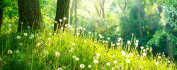

19 dec 2018
Sam agen

Tijn & licht Deel 2
Zuidelijk gelegen? Zicht op het westen? Deel 2 van onze spannende reekst: Hoe maak je optimaal gebruik van de lichtinval in je tuin

19 dec 2018
Sam agen
Zuidelijk gelegen? Zicht op het westen? Deel 2 van onze spannende reekst: Hoe maak je optimaal gebruik van de lichtinval in je tuin
19 okt 2018
Sam Vandendriesen

Het is weer vrijdag! wil je je tuin een klein betje extra pit geven? Vandaag gebruikt Sam enkel een elastiekje en een zoutvatje om mooide tuindecoratie te maken
19 okt 2018
Sam van Nijn

Sam legt uit welke paddenstoelen giftig zijn en hoe je ze kan herkennen
19 okt 2018
Sam Breinen

De start van een nieuwe reeks ons team van Sammen leeft je in deze 5-delige reeks hoe je optimaal gebruik kan maken van de lichtinval
19 okt 2018
Sam Besen

Last van slakken? 10 handige tips om slakken te weren uit je tuintje
19 okt 2018
Sam Bremen
Dankzij jullie steun zijn we vastberaden om nog meer mensen te informeren over onze liefde voor Tuinen. Vanaf volgende maand zullen wij starten met een maandelijkse...
18 okt 2018
San van Rijn

De verkiezingen zijn achter de rug. Sam kijkt vandaag naar de impact daarvan op jouw tuin
19 okt 2018
Sam Vandervoor

De herfst staat voor de deur. Sam neemt je mee op de 3 mooiste bochten door de ardennen

Offerte aanvragen
Vraag een opgave aan
Privacy & Veiligheid
Jobs